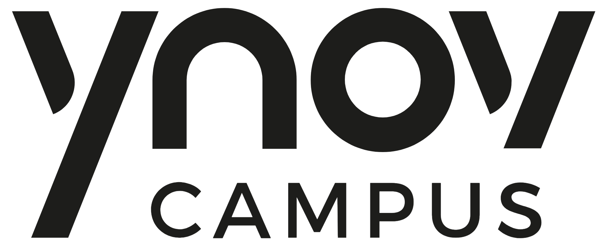

École & Entreprise.
Mon environnement académique et mes objectifs professionnels.
Paris Ynov Campus
Paris Nanterre (Campus Ouest) École supérieure des métiers du digital
Le digital s'apprend par la pratique.
Paris Ynov Campus est une institution dédiée à la formation aux métiers de demain. L'école se distingue par une pédagogie active centrée sur la réalisation de projets réels, favorisant l'interdisciplinarité (YDAYS) et l'insertion professionnelle immédiate grâce à l'alternance.
- - Informatique & Développement (Full Stack, Mobile, Cloud)
- - Cybersécurité & Réseaux Ma filière
- - Intelligence Artificielle & Data Science
- - Création & Digital Design (UX/UI, Direction Artistique)
- - 3D, Animation & Jeux Vidéo
- - Marketing & Communication Digitale
- - Audiovisuel & Son
- - Architecture d'Intérieur & Bâtiment Numérique
Recherche Alternance
Intégrer une DSI pour participer activement au maintien en condition opérationnelle (MCO), à l'administration des serveurs et à la mise en œuvre des politiques de sécurité.
Recherche Stage
Découvrir l'environnement d'une équipe IT, consolider mes bases en support utilisateur et assister à la gestion d'infrastructures réseaux.